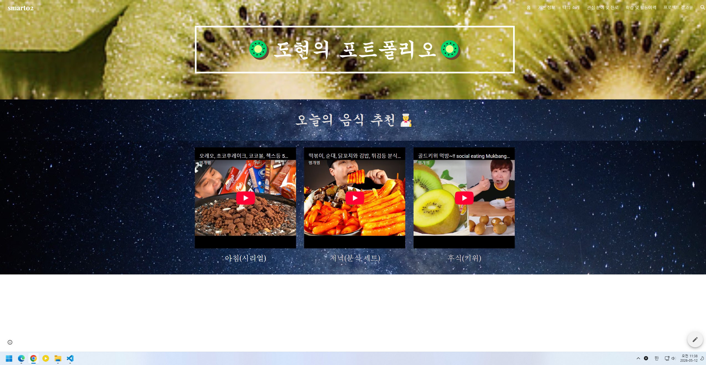

Overview
포트폴리오
자기소개 웹사이트를 제작하며 웹사이트 구성과 개발 과정을 경험할 수 있었습니다. 프로젝트를 진행하면서 단순한 기능 구현뿐만 아니라 화면 구성, 디자인, 사용자 경험까지 고려해야 한다는 점을 깨달았습니다. 또한 작은 요소 하나까지도 섬세한 설계와 많은 정성이 필요하다는 것을 느꼈으며, 웹 개발에 대한 이해와 관심을 더욱 높일 수 있었습니다.
HTML
CSS
GitHub Pages
Reflection
배운 점과 느낀 점
본 프로젝트는 사용자 편의성을 높이고 효율적인 서비스 제공을 목표로 개발한 웹 애플리케이션입니다. 기획부터 설계, 개발, 테스트까지 전 과정을 직접 수행하며 실무와 유사한 개발 경험을 쌓고자 진행하였습니다.